Case study · Quantum machine learning
I built a quantum ML lab and the honest answer is: quantum mostly ties or loses today — and I can prove it
Every quantum model raced against an ordinary classical one on the same data. Two of them flown to two real quantum computers. Then I pushed on the state of the art — and reproduced a published quantum advantage, only to erase it three separate ways. Eleven experiments, every one an honest tie-or-loss, reported proudly. This case study doesn't sell you quantum. It sells the person who will tell you the truth about whether quantum helps you.
Five independent state-of-the-art techniques, each tested honestly, all hit the same wall: whatever makes a quantum ML model usable — trainable, non-concentrated, plateau-free — tends to be exactly what makes it classically reproducible. The single most compelling proof: I reproduced a published quantum-kernel advantage (0.900 vs a weak classical 0.730) — then a fairly-tuned classical model beat it (0.910), a classical dequantization matched it (0.900), and device noise erased the rest. Same wall, five different roads to it.
The problem
Quantum computing is the most over-marketed idea in tech. Vendors publish the cherry-picked win, the pretty error-mitigated bar, the "quantum advantage" headline — and almost nobody publishes the honest baseline sitting next to it. So a founder, a fund, or a lab lead who is asked "should we invest in quantum for this?" has no neutral read to go on. The demos all say yes. The physics, quietly, mostly says not yet.
The usual sources are both compromised. A vendor sells you a machine. A consultant bills by the roadmap slide. Neither is incentivised to say the one sentence that saves you the most money: "for your problem, a classical computer still wins — here's the measurement."
The quantum result is not the deliverable. The classical baseline standing beside it is the deliverable — and that's the part the whole industry leaves out.
The approach: a lab built to disprove its own hype
I built QLAB — a local-first quantum-ML lab whose core rule is a quantum number is never shown alone. Every quantum model is raced against ordinary classical methods (logistic regression, an MLP, an RBF-SVM) on the identical data split. Two trained circuits were sent to real quantum hardware over the internet. Everything runs on one RTX 5090; the only thing that ever leaves the machine is a circuit small enough to fit on a real QPU. And every single number on this page traces back to a saved run you can reproduce.
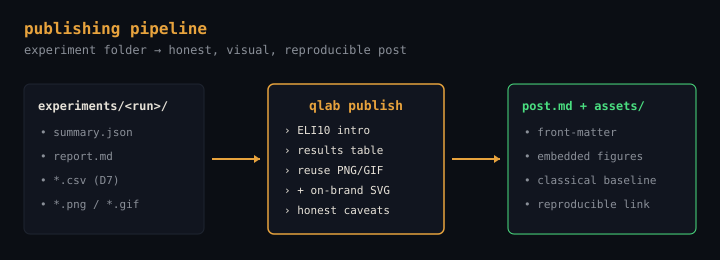
Design constraint D1: a quantum-advantage claim is permanently out of scope. Design constraint D2: the classical baseline is mandatory on every experiment. Those two rules are why the findings below are believable — the lab is structurally incapable of quietly hiding a loss.
The evidence: seven honest findings
Here is the foundational arc, sharpest first. Every one is a quantum-ties-or-loses result — and stating that plainly, with the number, is the entire point. Each links its full write-up (with the reproduce-it job id). Then, below these, comes the harder test: the four state-of-the-art techniques — capped by reproducing a published quantum advantage and erasing it.
I watched a quantum model become untrainable — the barren plateau, measured
A quantum model trains by feeling which way is downhill. A barren plateau is when the landscape flattens into a featureless desert — and it gets exponentially flatter as the circuit grows. I measured the gradient variance of a hardware-efficient circuit from 2 to 14 qubits: the global-cost signal collapsed 1,436× (clean exponential fit, α ≈ 0.64, r² = 0.99). A local cost decayed 7.1× slower — the known escape, quantified.
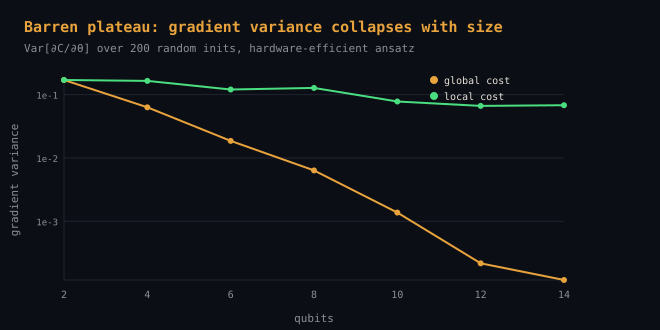
The sting is the honest 2025 dilemma, measured on my own machine: the trainable (shallow, plateau-free) regime is exactly the one a classical computer can cheaply copy. Trainable ⇒ not special; special ⇒ not trainable. That is the real reason "just scale it up" doesn't work yet — and almost no marketing deck will tell you.
Superconducting vs trapped-ion: the same circuit on two machines — and a mitigation that backfired
I took one trained circuit and ran it on two physically different quantum computers: IBM's superconducting ibm_fez and IonQ's trapped-ion forte-1. Against the perfect simulator answer (⟨Z₀⟩ = +0.724), the trapped-ion raw result landed closer to the truth (+0.60, off by 0.124) than superconducting (+0.49, off by 0.238) — on far fewer shots (100 vs 2048).
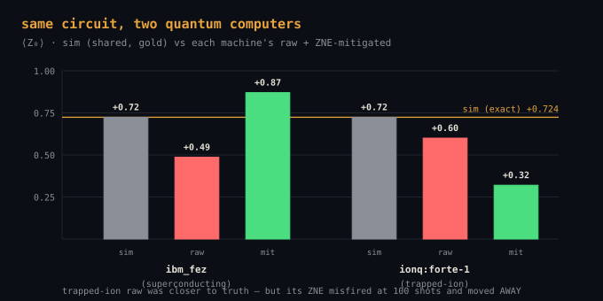
Then the honest twist: the same cheap error-mitigation trick that helped on superconducting backfired on trapped-ion — at 100 shots the noise-scaled points came out non-monotonic, so the extrapolation ran the wrong way and pushed the answer to +0.32, further from truth. Mitigation is a tool with a failure mode, not a free "make it better" button. Most write-ups only show you the run where it worked.
How many qubits fit in 32 GB? I simulated until the GPU refused — and it was 60× slower
Two surprises from throwing a GPU at simulating a quantum computer. First, the memory wall: the statevector doubles every qubit, so a 32 GB card holds the simulation to 28 qubits, and at 30 the over-commit guard refused the run rather than crash. Second, and more useful: for the small circuits this lab actually trains, the GPU was about 60× slower than the CPU — kernel-launch overhead dominates, and the card only earns its keep near the memory wall.
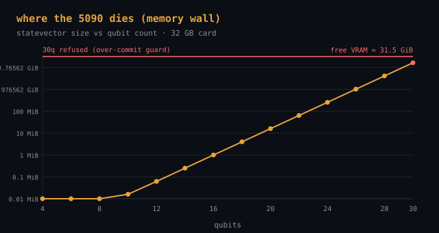
The model itself — a hybrid net telling a handwritten 0 from a 1 — landed at 99.5%, a hair behind logistic regression's 99.6%. The expected, spec-sanctioned loss, reported straight. The "just use the GPU" instinct is wrong at this scale, and knowing that saves real money.
A quantum classifier that ties a neural net — and why that's the honest result
A re-uploading quantum classifier hit 97.8% on the two-moons test — dead even with a small neural net (97.8%) and well above logistic regression (85.3%). The framework genuinely trains. But nobody won: it ties the classical net, and I show that side by side rather than quoting the quantum number alone. A tie, stated as a tie, is a more useful data point than a manufactured win.
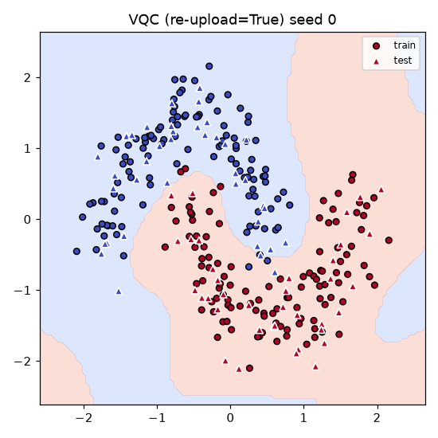
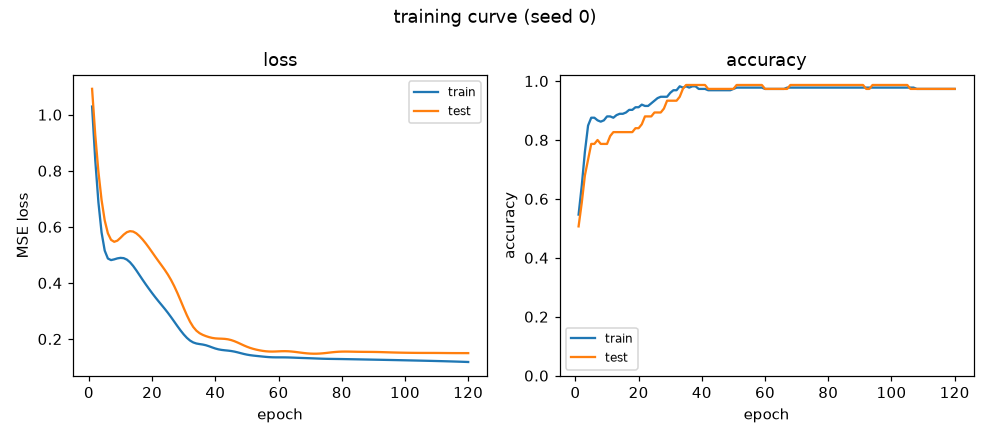
The quantum kernel that got worse as I added qubits
A quantum kernel measures "how similar do these two things look through a quantum lens?" It lost to a classical RBF-SVM on every dataset here (0.787 vs 0.973 on two-moons). Worse, its off-diagonal similarities concentrated 64× as qubits grew — the kernel version of the barren plateau, where everything starts looking equally similar so it can no longer tell points apart. Adding qubits made it worse. A clean negative result, reported plainly.
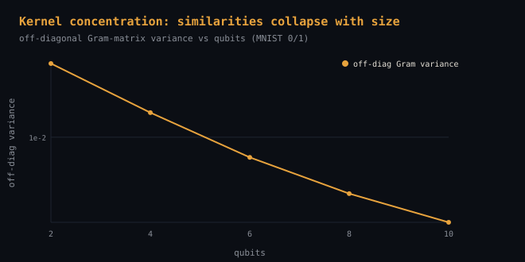
I ran a trained circuit on a real IBM quantum computer — here's the noise
A simulator-trained circuit, run on real superconducting silicon (ibm_fez). The clean value (+0.72) got dragged to +0.49 by hardware noise, then error-mitigation pulled it back to +0.87 — but that cleanup cost 3× the shots, and I report the cost, not just the prettier point estimate. The whole job used 5 s of QPU time against a hard 240 s budget cap that can't be overridden, so it's structurally impossible to overspend.
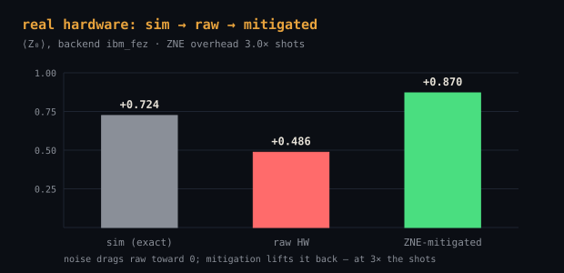
I let an LLM agent design quantum circuits in a sandbox for 10 cycles
An LLM proposed circuit variants and ran each one — inside a locked, no-network sandbox that structurally can't touch real hardware or overspend the QPU budget (every denial proven before any model-written code runs; the loop fails closed). Over 10 cycles it explored, hit a collapse (a bad ansatz cratered to 0.48), recovered, and edged the baseline by +0.0044 — which is within its own seed-to-seed noise. So the honest reading is a tie, and the agent's own report says so. The story isn't the number; it's the safe autonomy and the written rationale per cycle.
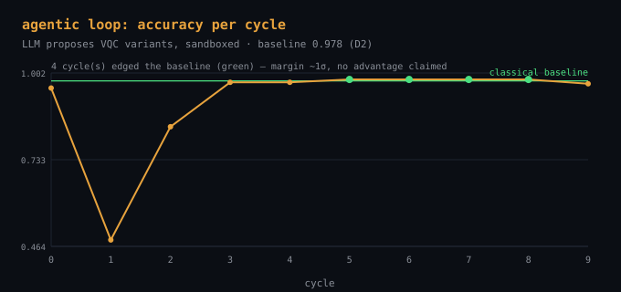
Seven experiments. Zero manufactured wins. Two runs on real quantum computers. Every quantum number sitting next to the classical one that ties or beats it — because that discrimination is the service. A vendor would have shown you the one mitigated bar that looked good and called it advantage. The judgment to tell you it isn't — and to prove it — is what you're actually paying for.
Then I went after the state of the art
The seven findings above are the foundation. But a fair critic asks the harder question: those are the easy cases — what happens when you use the newest, cleverest techniques the field invented specifically to beat classical? So I ran four of them, honestly, on my own machine. Each one is a technique published to rescue quantum ML. Each one hit the same wall.
I reproduced a published quantum advantage — then erased it three ways
In 2021 a landmark paper (Huang et al., Nature Communications) showed a projected quantum kernel beating classical methods on a carefully constructed dataset. I reproduced it faithfully: on their engineered split, the quantum kernel scored 0.900 against the weak classical baseline's 0.730 — a real, large gap. The advantage is genuine. It is also manufactured — and it does not survive a fair fight:
- Eraser 1 — a fairly-tuned classical model beats it: give the classical side the same care the quantum side got, and it scores 0.910, closing 106% of the gap.
- Eraser 2 — classical dequantization matches it: 1,000 random Fourier features + a linear SVM reproduce the "quantum" kernel exactly (0.900 vs 0.900). The quantumness wasn't doing the work.
- Eraser 3 — real-device noise erases the rest: under depolarizing noise + finite shots, the quantum kernel slips to 0.885 — at or below the fair classical line. The edge lived in fine structure that hardware destroys.
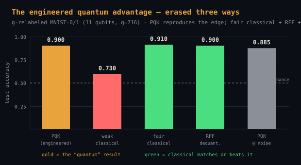
Reproduced honestly, then falsified honestly — the whole point of the lab, on the field's own flagship example.
The three supporting SOTA probes
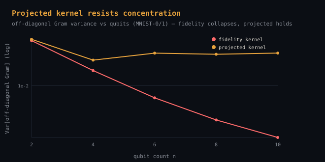
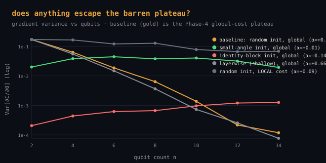
The whole SOTA arc, one line each
Each row is a state-of-the-art technique the field built to give quantum the edge. Each links its reproduce-it experiment folder. Every verdict is the same shape.
| Technique | What it promised | The honest finding |
|---|---|---|
| S-1 · agentic search of the “grail” | An LLM agent hunts for a circuit that is trainable AND classically hard at once. | The trainable-and-hard corner is near-empty — the dilemma holds. The agent nearly faked a win; the sandbox harness caught it. |
| S-2 · projected quantum kernels | A new read-out that cures the kernel “everything-looks-the-same” collapse. | Resists concentration 35× — and still loses to a classical RBF. Necessary, not sufficient. |
| S-3 · barren-plateau escapes | Init & training tricks to keep a deep quantum model trainable. | Escape only at initialisation, or by landing back in the classically-simulable regime. The hard circuit stays untrainable. |
| S-4 · reproduce a published advantage | The projected-kernel “quantum advantage” from Huang 2021. | Reproduced (0.900 vs 0.730) — then erased three ways: fair-classical 0.910, dequantization 0.900, noise 0.885. |
Two more supporting probes back these up: two independent simulability surrogates that disagree on one circuit (so shipping both is strictly more honest than either alone), and a map of exactly when error-mitigation helps versus hurts. Both live in the repo.
Five independent state-of-the-art techniques, each tested honestly, all hit the same wall: whatever makes a quantum ML model usable — trainable, non-concentrated, plateau-free — tends to make it classically reproducible. That convergence, measured five different ways, is the real finding.
What this does not claim
Stated up front, because the honesty is the product:
- No quantum advantage, anywhere. Not on one experiment — not even when I reproduced a published one and then erased it. That claim is permanently out of scope by design (
D1) — this lab exists to test the hype, not to sell it. - These are small, canonical tasks (two-moons, MNIST 0/1, toy 2-qubit circuits) chosen so the classical baseline is unambiguous and the physics is clean — not production ML workloads.
- The hardware runs are inference, not training. I never train on a real QPU (it burns budget for zero learning); circuits are trained on the simulator, proven equivalent to ~1e-15, then flown.
- This is a research lab, not a managed quantum service. What's for sale is the judgment, methodology, and honest measurement — a read on whether quantum helps your problem, delivered the same way: baseline beside every number, caveats included.
Everything runs on one RTX 5090; only a circuit small enough to fit on a real QPU ever leaves the box. Every accuracy traces to a seed_summary.csv, every hardware number to a job id and an equivalence.json proving the flown circuit matched the trained model. You don't have to trust the write-up — you can re-run it.
Wondering whether quantum is worth it for you?
If someone is pitching you quantum — for optimisation, ML, chemistry, "advantage" — the most valuable thing you can buy is a neutral read: does it actually beat the classical baseline for your problem, measured? That's what this lab does. Baseline beside every number, real hardware where it matters, failures reported proudly.
Ask for an honest read → Back to case studies The lab, the code & the reproduce-it experiments
There is no "quantum advantage" on this page on purpose — because there wasn't any, and I won't sell you one. The methodology, every experiment, and the honest benchmarks (losses included) live in the repository.